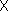
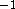
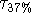
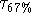
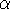
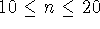

To study the intrinsic stride-to-stride dynamics and its changes with age, some preprocessing was performed on each time series. The first sixty seconds and the last five seconds of each time series were not included to eliminate any start-up or ending effects and to allow the subject to become familiar with the walking track. The time series were also processed to remove any pauses (stride time > 2 seconds and the 5 seconds before and after any pauses) as well as any large spikes or outliers. These outliers, which occurred infrequently, were removed so that the intrinsic dynamics of each time series could be more readily analyzed. This was accomplished using previously established methods (8,10) by: i) determining the mean and standard deviation of the stride time while excluding the 5% of the data with the lowest and highest values, and then ii) removing from the original time series all data that fell more than 4.0 standard deviations away from this mean value. The number of pauses (typically 0) and the number of strides excluded (typically 2 %) were similar in all three age groups.
As shown in Table 1 and summarized below, we applied several measures to analyze the variability and temporal structure of the stride time dynamics.
Stride-to-Stride Variability Measures
To estimate the overall stride-to-stride variability, we calculated the standard deviation of each time series and the coefficient of variation (CV) (100standard deviation/mean), an index of variability normalized to each subject's mean cycle duration. Both the standard deviation and the CV provide a measure of overall variations in gait timing during the entire walk, i.e., the amplitude of the fluctuations in the time series with respect to the mean. However, these measures may be influenced by trends in the data (e.g., due to a change in speed) and cannot distinguish between a walk with large changes from one stride to the next and one in which stride-to-stride variations are small and more long-term, global changes (e.g., a change in average value) result in a large standard deviation. Therefore, to estimate variability independent of local changes in the mean, we quantified successive stride-to-stride changes (i.e., the difference between the stride time of one stride and the previous stride) by determining the first difference of each time series. The first difference, a discrete analog of the first derivative, is one standard method for removing slow varying trends and is calculated by subtracting the previous value in the time series from the current value. The standard deviation of the first difference time series provides a measure of variability after detrending.
Temporal Structure Measures
To study the temporal organization, we applied three methods to analyze different aspects of the dynamical structure of the time series of the stride time.
Spectral Analysis: Fourier spectral analysis is a standard method for examining the dynamics of a time series. To insure that these dynamical measures were independent of the average stride time or the stride time variability, we studied the first 256 points of each subject's time series (after the 60 second ``start-up'' period) by first subtracting the mean and dividing by the standard deviation. This produces a time series centered at zero with a standard deviation of 1.0. Subsequently, standard Fourier analysis using a rectangular window was performed on each time series. To quantify any differences in the spectra, we calculated the percent of power in the high frequency band (0.25--0.50 strides) and the ratio of the low (.05 -- 0.25 strides) to high frequency power. This ratio excludes the power in the lowest frequencies and thus is independent of very large scale changes in the stride time. By computing the ratio of the fluctuations over relatively long time scales (i.e., low frequencies) to short time scales (i.e., high frequencies), an index of the frequency ``balance'' of the spectra is obtained. A large low/high ratio is indicative of nonstationarity. Therefore, to the extent that the gait of the younger children is more nonstationary, one would expect this spectral ratio to decrease with maturation.
Autocorrelation Decay: As a complementary method for analyzing the temporal structure of gait dynamics, we examined the autocorrelation properties of the stride time series. The autocorrelation function estimates how a time series is correlated with itself over different time lags and provides a measure of the ``memory'' in the system, i.e., for up to how many strides is the present value of the stride time correlated with past values. After direct calculation of the autocorrelation function in the time domain (20), we calculated two indices of autocorrelation decay:  and , the number of strides for the autocorrelation to decay to 37 % (1/e) or 63 % (1-1/e) of its initial value, respectively. To minimize any effects of data length, mean or variance, we applied this analysis to the first 256 strides and normalized each time series with respect to its mean and standard deviation. This autocorrelation measure emphasizes the correlation properties over a very short time scale, where the correlation decays most rapidly. If the ``memory'' of the system increases with maturity, one would expect to see longer decay times in older children.
Stride Time Correlations: To further study the temporal structure of the stride time dynamics (independent of the overall variance), we also applied detrended fluctuation analysis (DFA) (11,18) to each subject's stride time time series. DFA is a modified random walk analysis that can be used to quantify the long-range, fractal properties of a relatively long time series or, in the case of shorter time series, (i.e., the present study), it can be used to measure how correlation properties change over different time scales or observation windows (10,18). Methodologic details have been provided elsewhere (10-12,18). Briefly, the root-mean square fluctuation of the integrated and detrended time series is calculated at different time scales and the slope of the relationship between the fluctuation magnitude and the time scale determines a fractal scaling index, . To determine the degree and nature of stride time correlations, we used previously validated methods (10) and calculated over the region  (where n is the number of strides in the window of observation). This region was chosen as it provides a statistically robust estimate of stride time correlation properties that are most independent of finite size effects (length of data) (17) and because it has been shown to be sensitive to the effects of neurological disease and aging in older adults (10). Like the autocorrelation method, the DFA method quantifies correlation properties. However, the DFA method assumes that within the scale of interest the correlation decays in a power-law manner and, therefore, a single exponent () can quantify the scaling. Whereas the autocorrelation method was applied to examine the dynamics over very short time scales, the DFA method as applied here examines scaling over relatively longer time periods. If the stride-to-stride fluctuations are more random (less correlated) in younger children, one would expect that would be closer to 0.5 (white noise) in this group. In contrast, an value closer to 1.5 would indicate fluctutations with a brown noise quality, indicatinig the dominance of slow moving (18).